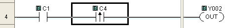

Topic: CL037

| Find |
Topic: CL037
|
Find is a tool that searches the Current Project for instances of:
At your selection, you can search the Entire Project, the Current Program only, or you can conduct a search within a Specified Range of Rungs. To activate the Find Tool, click on the menu selection or use the Ctrl + F shortcut keystroke.


1 Find
What: Type the Memory
Address, Nickname,
Address Comment, or
Rung Comment you want
to locate, or click the Browse
Button to
open the Address Picker
where you can select a Memory
Address.
to
open the Address Picker
where you can select a Memory
Address.
Any portion of the Address, Nickname, or Comment will also work, but you will find each instance of that fragment. For example, if you search Rung Comments for the letter "D," you will find each rung where the letter "D" appears in the Rung Comment. When you select the Instruction as the Find Type, the Find What field changes to a drop down menu where you can select an Instruction from the list, as shown below.

2 Exact Match: This checkbox is selected by default. When checked, the search is limited to an Exact Match of the entry in the Find field, discussed above in Item 1.
3Direction: Search Up from the cursor location or Search Down.
4 Area: Define the Search Area. Search any combination of: Contact Area, Coil Area, or Box Instructions.
5Find Type: Select one of the choices: Addresses, Nicknames, Address Comments, Rung Comments or Instruction.
6 Search Range: Select one of the choices. You can search the Entire Project (including Subroutines and Interrupts), or you can search the Current Program. If you search the Current Program, you can choose to search All Rungs or specify a Range of Rungs.
If you choose to search a Range, identify the starting rung and the ending rung in the boxes next to the word Rung.
The example below demonstrates a search for the internal Bit Memory Address, C4. In the example, the search of the Program is conducted downward from the current cursor position but includes the full program, searching all rungs.

Each successful search results in the movement of the Box Cursor to the rung or device where the target text is found.

The Find Examplebelow is setup to look for C4, but only in Rungs 1 through 3.C4 is located in the program but not in one of those rungs, so theFind will not locate an instance of C4usage.

The message below is the result.